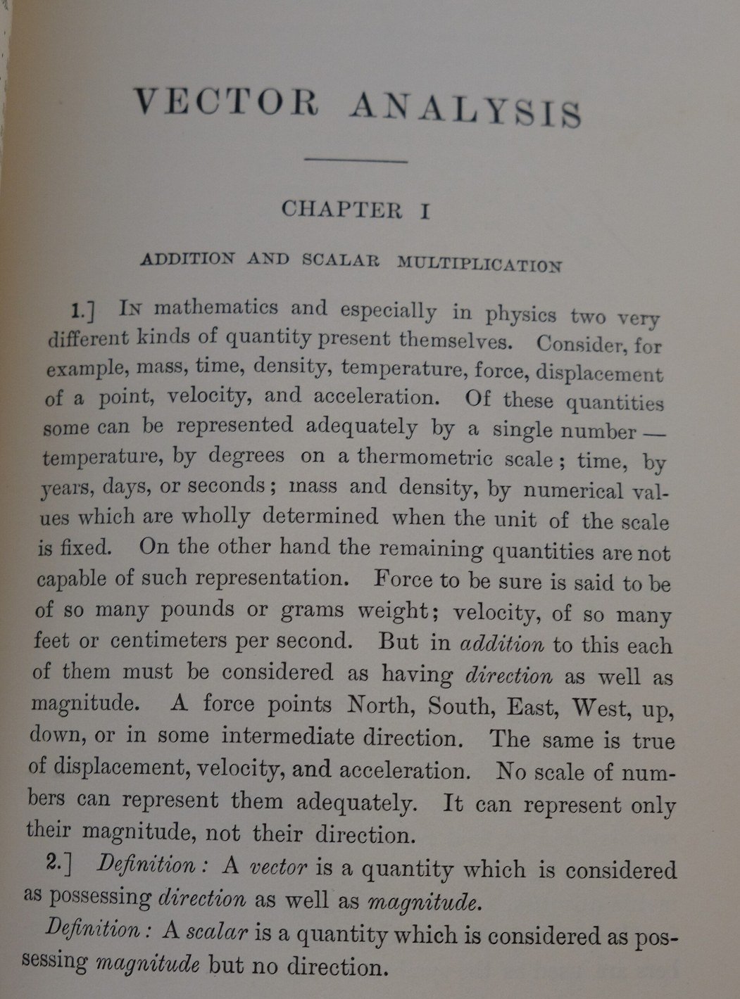
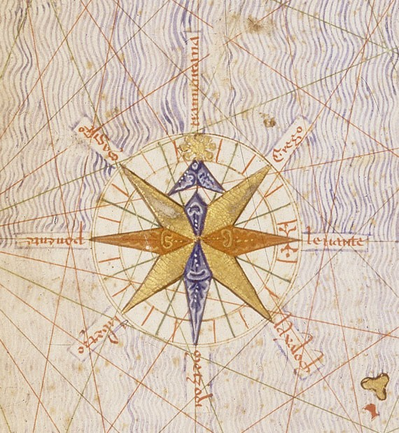
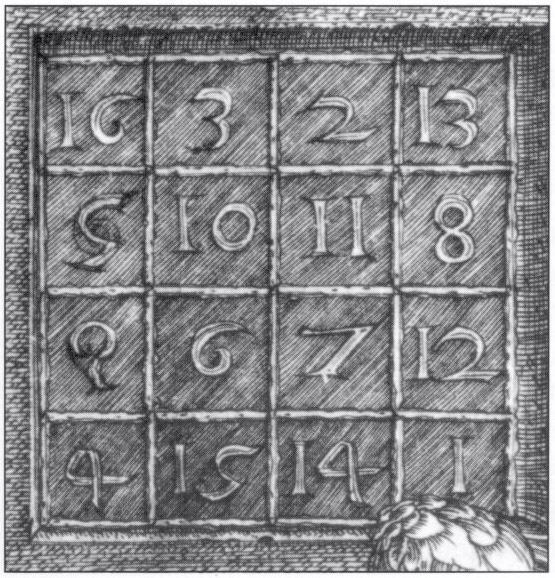
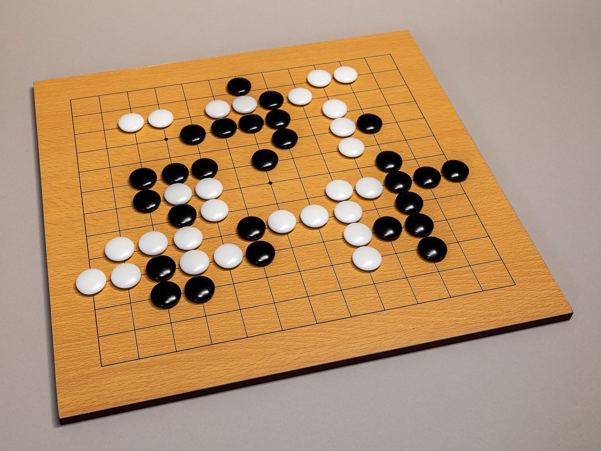
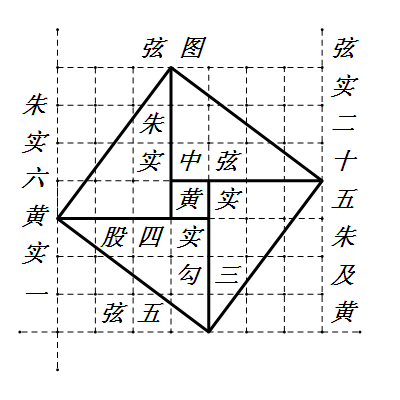
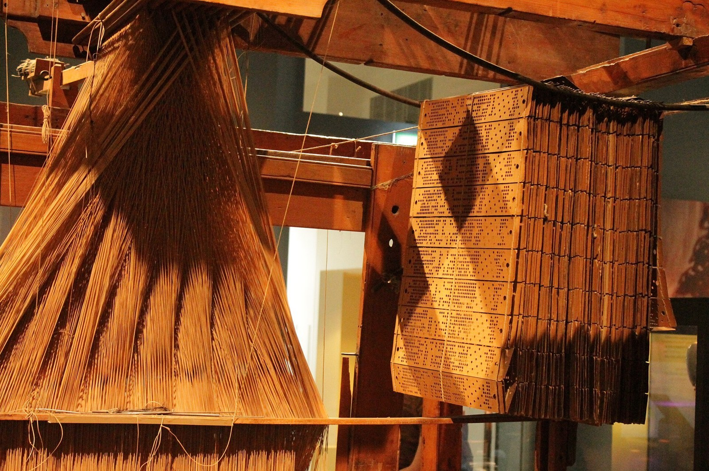
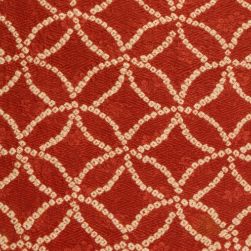

第5回
矢は、向きと長さをもつ。
月岡芳年『新形三十六怪撰』（1890年）／Public domain／Wikimedia Commons（上部を横長に切り出した）
第0部「記号と言葉」の最後の回。ベクトルと行列の書き方の流派（太字・矢印・下線・ブラケット）、成分と添字、転置、ノルム、単位ベクトル、内積、外積、行列の積を、一つずつ元の形に戻しながら確かめる。量子力学・電磁気学・機械力学の教材での書き方を並べて対照する。
第1回と同じく、飛ばしてよい部分は飛ばしてよい。高校の「ベクトル」「行列」で習ったことも、短く一度は書く（覚えている人は「最小の具体例」から読めばよい）。この回は、線形代数（第15回以降）と、物理・工学の科目すべての書き方の土台になる。ここで曖昧にしたまま進むと、後の回で「この太字は何か」「この添字はどちらの意味か」がまた分からなくなる。
記号が出るたびに、緑色の枠（記号）で「①読み方 ②日本語での意味 ③省略していない書き方 ④どこで出会うか」を書く。「省略の段階」の考え方は 第1回 6.1 を参照。
まず、この回で新しく説明する記号と、前の回で説明済みの記号に分けて一覧にする。「→」で説明のある場所へ飛べる。
| 記号 | 読み方 | ざっくりした意味 | 説明 |
|---|---|---|---|
| $\boldsymbol a$、$\vec a$、$\underline a$ | ベクトル・エー | 「$a$ はベクトルである」の目印（流派で違う） | →2.1 |
| $\lvert a\rangle$、$\langle a\rvert$ | ケット・エー、ブラ・エー | 量子力学のベクトルの書き方 | →2.2 |
| $a_i$ | エー・アイ | ベクトル $\boldsymbol a$ の $i$ 番目の成分（数） | →3.1 |
| $\boldsymbol 0$ | ゼロベクトル | 成分がすべて 0 のベクトル | →3.3 |
| $m\times n$ 行列、$\mathbb R^{m\times n}$ | エム・かける・エヌ行列 | $m$ 行 $n$ 列に数を並べたもの | →4.2 |
| $A_{ij}$、$(a_{ij})$、$[A]_{ij}$ | エー・アイ・ジェイ | 行列 $A$ の $i$ 行 $j$ 列の成分 | →4.3 |
| $[\boldsymbol a_1\ \boldsymbol a_2\ \cdots]$ | ― | 列ベクトルを横に並べて行列を作る | →4.4 |
| $I$、$\delta_{ij}$ | 単位行列、デルタ・アイ・ジェイ | 対角が 1、ほかが 0 の行列 | →4.5 |
| $A^{\mathsf T}$（$A^t$、${}^tA$、$A'$） | エー・トランスポーズ | 行と列を入れ替えた行列 | →5 |
| $\|\boldsymbol a\|$、$\lvert\boldsymbol a\rvert$ | ノルム・エー | ベクトルの長さ | →6.1 |
| $\boldsymbol e_x$、$\hat{\boldsymbol e}$、$\boldsymbol i,\boldsymbol j,\boldsymbol k$ | 単位ベクトル | 長さ 1 のベクトル | →6.2 |
| $\boldsymbol a\cdot\boldsymbol b$、$\langle\boldsymbol a,\boldsymbol b\rangle$、$\boldsymbol a^{\mathsf T}\boldsymbol b$ | エー・ドット・ビー（内積） | 対応する成分を掛けて全部足した数 | →7 |
| $(AB)_{ij}=\sum_k A_{ik}B_{kj}$ | ― | 行列の積を成分に戻した形 | →8 |
| $\boldsymbol a\times\boldsymbol b$ | エー・クロス・ビー（外積） | 3 次元で、両方に垂直なベクトル | →9 |
| 記号 | 意味 | 説明のある場所 |
|---|---|---|
| $x_1$（添字） | 名前に番号をつける。成分もこの書き方 | 第1回 4.1 |
| $x^2$、$x^{(2)}$ | 冪と、冪ではない括弧つきの肩（$A^{\mathsf T}$ の T も冪ではない） | 第1回 4.2、4.3 |
| $x'$（プライム） | 別のもの／微分。転置の記号として使う流派もある | 第1回 4.4 |
| $\cdots$ | 同じ規則で続く部分を省く | 第1回 4.5 |
| $:=$ | 左の名前を右の式で定める | 第1回 2.2 |
| $=,\ \neq$ | 等しい・等しくない | 第1回 2.1、2.6 |
| 省略の段階（S0, S1, …） | 省略を 1 段ずつ元に戻す考え方 | 第1回 6.1 |
| $\in$ | 「〜の要素である」 | 第2回 |
| $\mathbb R$、$\mathbb N$ など | 数の集合 | 第2回 |
| $\times$（直積）、$\mathbb R^n$ | $n$ 個の実数の組全体の集合 | 第2回 |
| $\forall$（すべての） | すべての〜について | 第2回 |
| $\Rightarrow,\ \Leftrightarrow$ | ならば／同値 | 第2回、同値 |
| $f\colon A\to B$、$f(x)$ | 関数＝対応の規則。$f$ と $f(x)$ の区別 | 第3回、$f$ と $f(x)$ |
| $\lvert x\rvert$（絶対値） | 数の大きさ。ノルムの 1 次元版 | 第3回 |
| $\sum$（総和） | 足し合わせる記号 | 第4回 |
| ダミー添字 | 和の中の添字は名前を変えてよい | 第4回 |
| $\delta_{ij}$（クロネッカーのデルタ） | $i=j$ なら 1、そうでなければ 0 | 第4回 |
| $\Sigma$ の範囲の省略 | $\sum_{k=1}^n\to\sum_k$ | 第4回 |
「温度は 20 ℃」「質量は 3 kg」のように、数 1 つ（と単位）で言い切れる量がある。これをスカラー量と呼ぶ。ところが「力」はそうはいかない。「5 N の力」と言っただけでは、どちらを向いて押しているのかが分からない。位置の移動（変位）も、速度も、電場もそうである。これらは大きさと向きの両方がないと量として決まらない。
そこで、「大きさと向きをもつ量」を一つの対象として扱う仕組みが必要になる。これがベクトルである。高校では「矢印」で習ったはずだ。この回では、矢印としての見方と、数を並べたものとしての見方の両方を使えるようにする。後者が、計算（とコンピュータ）の見方である。
PHOTO 1｜現実

1907年の『Vector Analysis』は、第1章の冒頭でベクトルを、向きと大きさをもつ量と定義した。
Edwin Bidwell Wilson『Vector Analysis』（1907年版）／Public domain／Wikimedia Commons（下の余白を切り落とした）
MITATE 1｜見立て

羅針図は、八つの向きを、中心から出る八本の矢で示している。
Cresques Abraham 作とされる『カタルーニャ地図』（1375年）／Public domain／Wikimedia Commons（羅針図の部分）
平面上に点 $O$（原点）と点 $P$ があるとする。$O$ から $P$ へ向かう矢印を考える。この矢印には 2 つの情報がある。
重要なのは、始点がどこでもよいという約束である。長さと向きが同じ矢印は、平行移動して重なるなら「同じベクトル」と見なす。下の図では、原点から出る矢印と、点 $(1,0)$ から出る矢印は、同じベクトルを表している。
矢印をもっと正確に書くには、座標を使う。始点を原点に置いたとき、矢印の先が点 $(3,4)$ にあるなら、「右へ 3、上へ 4 動く」という指示になる。この(3, 4) という数の並びが、そのベクトルの成分表示である。
3 次元なら、先端の座標が $(x,y,z)$ であるような矢印は、3 つの数の組 $(x,y,z)$ で書ける。$n$ 次元なら $n$ 個の数の組になる。
このとき、長さは三平方の定理で計算できる。図 5.1 では、横 3、縦 4 の直角三角形の斜辺だから、長さは $\sqrt{3^2+4^2}=\sqrt{9+16}=\sqrt{25}=5$ である。
矢印の見方と数の組の見方が「同じもの」だと言えるのは、演算が一致するからである。確かめる。
足し算：矢印を足すときは、一方の矢印の先に、もう一方の矢印の始点をつなぐ。例えば $(3,4)$ の矢印と $(1,-2)$ の矢印をつなぐと、つないだ全体の先端は、原点から「右へ $3+1$、上へ $4+(-2)$」の位置にくる。
$$ (3,4)+(1,-2)=(3+1,\ 4+(-2))=(4,\ 2) $$
すなわち、足し算は成分ごとの足し算である。
図1.1 で、矢印をつなぐ足し算と、成分の足し算が同じになることを見る。
定数倍：矢印を 2 倍に伸ばす（向きは同じ）と、右へ $2\times 3$、上へ $2\times 4$ になる。
$$ 2\,(3,4)=(2\cdot 3,\ 2\cdot 4)=(6,\ 8) $$
確かめ：長さは $\sqrt{6^2+8^2}=\sqrt{100}=10$。元の長さ 5 のちょうど 2 倍になっている。負の数を掛けると向きが逆になる：$(-1)\,(3,4)=(-3,-4)$。
定数倍を矢印で描くと図1.2 になる。3本とも、原点を通る同じ直線の上にある（重ならないよう少しずらして描いた）。
「ベクトルの足し算では、長さも足される」と思うのは誤り。$(3,4)$（長さ 5）と $(1,-2)$（長さ $\sqrt5\approx 2.236$）を足すと $(4,2)$ で、その長さは $\sqrt{16+4}=\sqrt{20}\approx 4.472$。$5+2.236=7.236$ にはならない。長さが足し算になるのは、2 つのベクトルが同じ向きのときだけである。
$n$ 個の実数の組全体の集合を $\mathbb R^n$ と書く。これは第2回の 直積 $\mathbb R\times\mathbb R\times\cdots\times\mathbb R$ を $n$ 個並べたものを、肩の数字でまとめた省略形である（第1回の冪と同じ発想）。「$\boldsymbol a$ は $n$ 次元の実ベクトルである」を記号で書くと、次のようになる。
$$ \boldsymbol a\in\mathbb R^n $$
読み方は「$\boldsymbol a$ は $\mathbb R^n$ の要素である」（$\in$）。$n=2$ なら平面上のベクトル、$n=3$ なら空間のベクトルである。
$a$ と書いたとき、それが数なのかベクトルなのかが、文字の形からは分からない。「$a+b$」と書かれても、数の足し算かベクトルの足し算かが決まらない。そこで、ベクトルの文字には目印をつける。ところが、目印の形は科目や教科書によって違う。ここが最初の落とし穴である。
①読み方：どれも「ベクトル・エー」。声に出すときは目印を読まないことが多い。（「$\boldsymbol F$」は「エフ」と読み、前後から力のベクトルだと分かる。）
②日本語での意味：「この文字は数 1 つではなく、数の組（または矢印）である」という目印。
③省略していない書き方：目印を省略した形が「添字だけ」の流派（$a_i$ と書いて、「$a$ という名前の成分 $i$ 番目」を言う）。目印をつけた完全形は、「$\boldsymbol a=(a_1,a_2,\ldots,a_n)$」。つまり目印のついた文字 1 つが、$n$ 個の成分をまとめて呼ぶ名前になっている。
④どこで出会うか：線形代数、電磁気学（$\boldsymbol E$, $\boldsymbol B$）、機械力学（$\boldsymbol F$, $\boldsymbol r$）、ベクトル解析、機械学習。
①読み方：$\lvert a\rangle$ は「ケット・エー」、$\langle a\rvert$ は「ブラ・エー」。二つを合わせた $\langle a\vert b\rangle$ は「ブラケット」（英語の bracket＝括弧にちなむ）。
②日本語での意味：ケット $\lvert a\rangle$ は縦に並べたベクトル（列ベクトル）、ブラ $\langle a\rvert$ はそれを横に倒して、各成分の複素共役をとったものである。$\langle a\vert b\rangle$ は、その 2 つを並べた内積（第7節）。
③省略していない書き方：実数のベクトルなら、ブラは単なる転置：$\langle a\rvert=\boldsymbol a^{\mathsf T}$。したがって $\langle a\vert b\rangle=\boldsymbol a^{\mathsf T}\boldsymbol b=\boldsymbol a\cdot\boldsymbol b$。複素数を含むときは、各成分を複素共役にしてから転置する（複素数は第34回で扱う）。
④どこで出会うか：量子力学（ディラックの記法）。
同じ「ベクトル $\boldsymbol a$」を、各流派がどう書くかを並べる。
| 流派 | ベクトル | 成分の書き方 | 主に使われる場所 |
|---|---|---|---|
| 太字 | $\boldsymbol a$（活字では太字・斜体のことも。$\mathbf a$ とも） | $a_i$、または $(a_1,a_2,a_3)$ | 活字の教科書全般 |
| 矢印 | $\vec a$ | $a_i$ | 高校、手書き（太字は手で書けない） |
| 下線・波線 | $\underline{a}$、$\underset{\sim}{a}$ | $a_i$ | 手書き、一部のテキスト（太字の代わり） |
| 添字だけ | $a_i$（ベクトルそのものを $a_i$ と呼ぶ） | $i$ が成分の番号 | 物理の縮約記法（第27回） |
| ブラケット | $\lvert a\rangle$ | $\langle i\vert a\rangle$（$i$ 番目の成分） | 量子力学 |
| 山括弧（成分表示） | $\langle 1,2,3\rangle$ と書いて、成分を並べたベクトルそのものを指す | — | OpenStax Calculus Vol.3 など |
| 標準基底の書き込み | $a_x\boldsymbol i+a_y\boldsymbol j+a_z\boldsymbol k$ | $a_x,a_y,a_z$ | 力学・電磁気学・微積分 |
| 文字を変えずに書く | $a$（目印なし） | 前後から判断 | 演算子や $A_{ij}$ の形で書く本 |
表の「ベクトル」の列を、カードに並べ直したものが図2.1 である。
「大きさ」だけを言うとき、$\boldsymbol F$ の大きさを目印をはずした $F$ と書く本が多い。例えば電磁気学の教材では「大きさは $\lvert\boldsymbol F\rvert=F$」と書く（電磁気学 第1回）。つまり同じ文字 $F$ が、目印の有無でスカラー（大きさ）とベクトルに使い分けられる。目印がはずれているのを見落とすと、$F$ がベクトルだと誤解する。
この教材では、ベクトルは太字 $\boldsymbol a$、スカラーは細字 $a$で統一する。矢印は手書きのときに使う。
図2.2 は、同じ文字 $F$ が太字と細字で別のものを指すようすである。
手元にある、これまでの講義資料と教科書での書き方を並べる（文机の公開版を確認したもの）。
| どこで | ベクトル・内積・外積の書き方 | リンク・出典 |
|---|---|---|
| 電磁気学 | 太字 $\boldsymbol F,\boldsymbol E$（手書きは $\vec F$）、大きさ $\lvert\boldsymbol F\rvert=F$、単位ベクトルは $\hat{\boldsymbol r}$ のように太字の上にハット、内積は $\boldsymbol E\cdot\boldsymbol n\,\mathrm dS$ | 第1回、第2回 |
| 機械力学 | 太字 $\boldsymbol F$、零ベクトルも太字 $\boldsymbol 0$（$\sum\boldsymbol F=\boldsymbol 0$）、モーメントは外積 $\boldsymbol M=\boldsymbol r\times\boldsymbol F$。2 次元では外積を数 1 つ $a_xb_y-a_yb_x$ として使う | 第1回、第2回、第3回 |
| 量子力学 | ベクトルの代わりに関数 $\psi(x)$ を使う。$\langle x\rangle$ は期待値（山括弧の別の意味）。期待値は $\langle A\rangle_\psi=\int\psi^*\hat A\psi\,dx\big/\!\int\lvert\psi\rvert^2dx$ と積分で書く（この積分を $\langle\psi\vert\hat A\vert\psi\rangle$ とブラケットで書くのが標準的な短縮形） | 第3回、第4回 |
| 応用数学Ⅱ | ベクトル場を太字 $\boldsymbol A(\boldsymbol r)$ と書く。第9回では、ベクトルの内積が 0 のとき直交、という見方を関数の直交に広げる | 第9回、レポート課題 |
| OpenStax Calculus Vol.3 第2章 | 太字 $\mathbf u$、成分は山括弧 $\langle 3,-4\rangle$、$\mathbf i,\mathbf j,\mathbf k$、長さ $\lVert\mathbf u\rVert$、内積 $\mathbf u\cdot\mathbf v$、外積 $\mathbf u\times\mathbf v$ | CC BY-NC-SA 4.0 |
| Hefferon Linear Algebra | 矢印 $\vec v$、零ベクトルも矢印つき $\vec 0$、成分は縦に並べる、長さは縦線 1 本の $\lvert\vec v\rvert$、内積は黒丸の $\vec u\bullet\vec v$、転置は $A^{\mathsf T}$、行列の成分は カンマつき $a_{i,j}$ | 第1章 II（長さ・内積）、第3章（転置の定義）（GFDL / CC BY-SA） |
| Mathematics for ML（Deisenroth ほか） | 太字 $\boldsymbol x$、既定は縦ベクトル、横ベクトルは $\boldsymbol x^{\top}$、成分 $a_{ij}$、転置 $A^{\top}$、内積は $\langle\boldsymbol x,\boldsymbol y\rangle$ と $\boldsymbol x^{\top}\boldsymbol y$ の両方 | 第2章（個人利用のみ） |
動機：ベクトルを数の組と見たとき、「その中の 1 つの数」を指す名前が必要になる。第1回で学んだ添字の出番である。
①読み方：「エー・アイ」。「ベクトル $\boldsymbol a$ の $i$ 番目の成分」と読む。
②日本語での意味：ベクトル $\boldsymbol a$ を数の組 $(a_1,a_2,\ldots,a_n)$ として並べたときの、左から（上から）$i$ 番目の数。$a_i$ はベクトルではなく数（スカラー）である。
③省略していない書き方：$\boldsymbol a=(a_1,a_2,\ldots,a_n)$ と書いたとき、$a_i$ とは「$\boldsymbol a$ の第 $i$ 成分」の意味。関数の形で $\boldsymbol a(i)$ と書く流派（コンピュータ）や、$[\boldsymbol a]_i$ と書く本もある（第1回 4.1 の「関数の引数のかわりに右下に小さく書く」と同じ）。
④どこで出会うか：線形代数、総和の記号の中、物理の縮約記法。
最小の具体例：$\boldsymbol a=(7,\,8,\,9)$ とする。成分は $a_1=7$、$a_2=8$、$a_3=9$。「$a_2$」と書かれていれば、それは 8 という数のことで、ベクトル全体ではない。成分が 3 つなので、$\boldsymbol a\in\mathbb R^3$（1.5）。
図3.1 で、番号 $i$ が「どの箱を開けるか」を指していることを見る。
3 次元で $x,y,z$ の名前をつける流派もある：$\boldsymbol a=(a_x,a_y,a_z)$。ここでの添字 $x,y,z$ は、番号 1, 2, 3 のかわりに座標軸の名前を使っただけで、同じものを指す（$a_x=a_1$, $a_y=a_2$, $a_z=a_3$）。
$a_1$ という書き方は、二つの別の意味で使われる。
目印（太字）がついていれば (b)、ついていなければ (a)。目印がはずれている本では、前後の文で判断する。この二つの区別は、4.4 で行列を「列ベクトルを横に並べたもの」と書くときにも出てくる。
二つの意味を、図3.2 に並べる。
数の組には、縦に並べる書き方と横に並べる書き方がある。
$$ \text{縦（列ベクトル）：}\ \boldsymbol a=\begin{pmatrix}7\\8\\9\end{pmatrix},\qquad \text{横（行ベクトル）：}\ \boldsymbol a=\begin{pmatrix}7&8&9\end{pmatrix} $$
カンマで区切る書き方 $(7,8,9)$ は、横に書いてあるが、どちらを表すかを決めていないことが多い。どちらとして使うかは、後の計算（行列との積、第8節）で決まる。
同じ3つの数を、縦と横に並べたものが図3.3 である。
縦と横を取り替える操作が転置である（第5節）。
①読み方：「ゼロベクトル」。
②日本語での意味：すべての成分が 0 のベクトル。長さが 0 で、向きは決まらない。
③省略していない書き方：$\boldsymbol 0=(0,0,\ldots,0)$（0 が $n$ 個）。数の 0 と区別するために太字にする。次元は文脈で決まる。
④どこで出会うか：力のつりあい $\sum\boldsymbol F=\boldsymbol 0$（機械力学）、線形代数。
$\boldsymbol F=\boldsymbol 0$ という式は、「ベクトルとしての等号」で、成分ごとに全部の等号を一度に言っている。3 次元なら、
$$ \boldsymbol F=\boldsymbol 0\ \Longleftrightarrow\ F_1=0\ \text{かつ}\ F_2=0\ \text{かつ}\ F_3=0 $$
である（かつ：第2回、同値 $\Leftrightarrow$：第2回）。この「1 つの式が成分の数だけの式を一度に言う」が、ベクトルの書き方の最大の省略である。
和と定数倍も、1.4 で見たとおり成分ごとに定義される。$c$ をスカラーとして、
$$ (\boldsymbol a+\boldsymbol b)_i=a_i+b_i,\qquad (c\,\boldsymbol a)_i=c\,a_i\qquad(i=1,\ldots,n) $$
左辺の $(\boldsymbol a+\boldsymbol b)_i$ は「ベクトル $\boldsymbol a+\boldsymbol b$ の第 $i$ 成分」と読む（括弧の外に添字をつける書き方は、行列でも同じ。4.3）。
連立一次方程式を例にとる。
$$ \begin{cases} 2x+3y=5\\ x-y=0 \end{cases} $$
この式の中で、方程式を特徴づけているのは、$x$ と $y$ の前についている数（係数）$2,\,3,\,1,\,-1$ と、右辺の $5,\,0$ である。文字 $x,y$ は毎回同じものが並ぶだけで、書くたびに繰り返す必要はない。そこで、係数だけを、式の形のまま長方形に並べる。
$$ \begin{pmatrix} 2 & 3\\ 1 & -1 \end{pmatrix} $$
これが行列の一例である。行列は、連立方程式の係数の表であり、また（第16回で）ベクトルをベクトルに移す規則でもある。この回では、まず書き方を確定する。
図4.1 で、方程式から行列を作る手順を目で追う。
①読み方：「エム・かける・エヌ行列」（「エム・バイ・エヌ」とも）。$\mathbb R^{m\times n}$ は「アール・エム・かける・エヌ」。
②日本語での意味：実数を$m$ 行 $n$ 列に長方形に並べたもの。行は横の並び（上から数える）、列は縦の並び（左から数える）。$\mathbb R^{m\times n}$ は、そのような行列全体の集合。
③省略していない書き方：「$A\in\mathbb R^{m\times n}$」＝「$A$ は、$m$ 行 $n$ 列に実数を並べた行列である」。ここでの「$\times$」は掛け算ではなく、行の数と列の数を区切る記号（第2回の直積と同じ形だが、掛け算でも直積でもなく、大きさの書き方）。$m=n$ のとき正方行列と呼ぶ。
④どこで出会うか：線形代数、連立方程式、座標変換、制御工学、機械学習のデータ。
最小の具体例：次の $A$ は 2 行 3 列、すなわち $2\times 3$ 行列である。
$$ A=\begin{pmatrix} 1 & 2 & 3\\ 4 & 5 & 6 \end{pmatrix}\in\mathbb R^{2\times 3} $$
横の並び（行）が 2 本：$(1\ 2\ 3)$ と $(4\ 5\ 6)$。縦の並び（列）が 3 本：$\binom14$、$\binom25$、$\binom36$。
図4.2 に、同じ行列の「行」と「列」を色分けして描く。
ベクトルとの関係も確かめておく。縦ベクトル $\boldsymbol a\in\mathbb R^3$ は、「3 行 1 列の行列」と見ることができる（$\mathbb R^3=\mathbb R^{3\times 1}$）。横ベクトルは「1 行 3 列の行列」（$\mathbb R^{1\times 3}$）である。ベクトルは、列が 1 本だけの行列だと思ってよい。これが、縦ベクトルを既定とする理由の一つである。
日本語の「行」と「列」は、どちらがどちらか混ざりやすい。「行は横に走る（文章の行と同じ）」「列は縦に並ぶ（電車の列は前後に並ぶが、数学では縦）」と固定する。英語では行が row、列が column で、column は建物の「円柱（縦の柱）」と同じ単語である。
PHOTO 2｜現実

デューラーは数を、縦と横に並べて版画の中に彫った。
Albrecht Dürer『メランコリアI』（1514年）／Public domain／Wikimedia Commons（魔方陣の部分）
MITATE 2｜見立て

縦の線と横の線の交点に、石が一つずつ置かれる。
Dietmar Rabich（2021年）／CC BY-SA 4.0／Wikimedia Commons（縮小した）
動機：行列の中の 1 つの数を指す名前が必要になる。ベクトルは番号が 1 つ（$i$）で足りたが、行列は行の番号と列の番号の 2 つが要る。添字が 2 つになる。
①読み方：$A_{ij}$ は「エー・アイ・ジェイ」。「行列 $A$ の $i$ 行 $j$ 列の成分」と読む。「$(i,j)$ 成分」とも言う。
②日本語での意味：行列 $A$ の、上から $i$ 番目の行と左から $j$ 番目の列が交わる位置に書かれた数。先に行、あとに列。
③省略していない書き方：$A_{ij}$ のかわりに、カンマを入れて $A_{i,j}$ と書く本（Hefferon）もあり、これが省略前の形に近い。さらに、行列 $A$ の中身を成分の式で指定するときは $A=(a_{ij})$ と書く：「$A$ は、$i$ 行 $j$ 列の成分が $a_{ij}$ であるような行列」。式全体の成分を言うときは $[A]_{ij}$、あるいは $(AB)_{ij}$ のように、括弧でくくって添字をつける。
④どこで出会うか：線形代数、行列の積の定義、画像（ピクセルの行と列）、有限要素法、機械学習。
先ほどの $A$ で読み取る。
図4.3 は、$A_{ij}$ の2つの添字を「番地」として描いたものである。
$A_{12}\neq A_{21}$ である（第1回の $\neq$）。添字の順番を入れ替えると別の成分になる。
次に、成分の式から行列を作る練習をする。$2\times 3$ 行列 $(a_{ij})$ を、$a_{ij}:=i+j$ で定める（$:=$）。$i=1,2$、$j=1,2,3$ のすべての組で値を求める。
| $(i,j)$ | $(1,1)$ | $(1,2)$ | $(1,3)$ | $(2,1)$ | $(2,2)$ | $(2,3)$ |
|---|---|---|---|---|---|---|
| $a_{ij}=i+j$ | $2$ | $3$ | $4$ | $3$ | $4$ | $5$ |
1 行目に $(i=1)$ を、2 行目に $(i=2)$ を並べると、
$$ (a_{ij})=\begin{pmatrix} 2&3&4\\ 3&4&5\end{pmatrix} $$
$A_{12}$ と書くと、「1 行 2 列」と読むのが普通だが、行や列が 10 以上になる行列では、$A_{1\,12}$ が「1 行 12 列」なのか「11 行 2 列」なのかが分からなくなる。そのため、カンマで区切る書き方 $A_{1,12}$ を使う本がある。Hefferon（第1章）の演習 2.26 は、まさに「なぜ $a_{i,j}$ にカンマが必要か」を問う問題である。この教材では、数字の添字が 2 桁になるときだけカンマを入れる。
$A$ は行列（長方形）、$A_{ij}$ はその中の 1 つの数である。$A_{ij}$ をさらに添字つきで $(A_{ij})$ と括弧でくくった場合は、「成分が $A_{ij}$ であるような行列全体」の意味になる（$(a_{ij})$ と同じ）。括弧の有無で、数と行列が入れ替わる。
行列は、「縦ベクトルを横に並べたもの」とも、「横ベクトルを縦に並べたもの」とも見られる。そう見るときの書き方は、省略が積み重なっている。段階に分けて確かめる。
$2\times 3$ の例 $A=\begin{pmatrix}1&2&3\\4&5&6\end{pmatrix}$ の列を $\boldsymbol a_1,\boldsymbol a_2,\boldsymbol a_3$ と名づける。
| 段階 | 書き方 | 何を省いたか | 省いても困らない理由 |
|---|---|---|---|
| S0 | $A=\begin{pmatrix}A_{11}&A_{12}&A_{13}\\A_{21}&A_{22}&A_{23}\end{pmatrix}$（成分を全部書く） | （省略なし） | ― |
| S1 | $\boldsymbol a_j:=\begin{pmatrix}A_{1j}\\A_{2j}\end{pmatrix}\ (j=1,2,3)$ と定める | 「$A$ の $j$ 番目の列を $\boldsymbol a_j$ と呼ぶ」という定義を別に置き、成分を隠す | $\boldsymbol a_j$ は太字で、$A_{ij}$（数）と区別できる（3.1） |
| S2 | $A=\begin{pmatrix}\boldsymbol a_1&\boldsymbol a_2&\boldsymbol a_3\end{pmatrix}$ | 各列の成分を書かず、列ベクトルの名前を横に並べる | 各 $\boldsymbol a_j$ の定義が S1 で済んでいる |
| S3 | $A=\begin{pmatrix}\boldsymbol a_1\,\vert\,\boldsymbol a_2\,\vert\,\boldsymbol a_3\end{pmatrix}$ または $A=[\boldsymbol a_1\ \boldsymbol a_2\ \boldsymbol a_3]$ | 括弧の種類を変えたり、縦線で列の境を示したりするだけ（意味は S2 と同じ） | どの書き方も「列を横に並べる」 |
行ベクトルの場合も同じ手順で書く。$A$ の $i$ 行目の横ベクトルを $\boldsymbol r_i$ と名づけると、
$$ A=\begin{pmatrix}\boldsymbol r_1\\ \boldsymbol r_2\end{pmatrix},\qquad \boldsymbol r_1=\begin{pmatrix}1&2&3\end{pmatrix},\quad \boldsymbol r_2=\begin{pmatrix}4&5&6\end{pmatrix} $$
注意：S2 の $\boldsymbol a_1$ は「第 1 列という名前のベクトル」であって、ベクトルの成分 $a_1$ ではない。太字の有無と、「列の番号か成分の番号か」を、本の定義で確かめる（3.1 の「$a_1$ は成分かベクトルか」）。行ベクトルは $\boldsymbol r_i$ ではなく $\boldsymbol a_i^{\mathsf T}$ と書く本も多い。
同じ $A$ を、列で切った場合と行で切った場合を図4.4 に並べる。
正方行列の中に、特別な役割をもつものがある。対角線上（$i=j$ の位置）が 1、ほかが 0 の行列である。
①読み方：「単位行列」「アイ」。$n\times n$ のものを $I_n$（「アイ・エヌ」）と書き、次元を明示する。
②日本語での意味：どのベクトルに掛けても、そのベクトルが変わらない行列（第16回で確かめる）。成分で言えば、対角が 1、ほかが 0。
③省略していない書き方：$I_{ij}=\delta_{ij}$。ここで $\delta_{ij}$ は第4回のクロネッカーのデルタ（$i=j$ なら 1、$i\neq j$ なら 0）。3 次元では、
$$ I_3=\begin{pmatrix}1&0&0\\0&1&0\\0&0&1\end{pmatrix} $$
④どこで出会うか：逆行列 $AA^{-1}=I$（第16回）、固有値 $A-\lambda I$（第20回）、直交行列。日本語の線形代数の本では $E$ を使うものも多い（$I$ と同じ意味）。
確かめ：$I_{ij}=\delta_{ij}$ に $i=1,j=1$ を入れると $\delta_{11}=1$（$i=j$ だから）。$i=1,j=2$ では $\delta_{12}=0$（$i\neq j$ だから）。この値の並びが $I_3$ の上の行 $(1\ 0\ 0)$ の最初の 2 つに一致する。
$I_{ij}=\delta_{ij}$ を、番地つきの表にすると図4.5 になる。
大文字の $I$（行列）、小文字の添字 $i$（番号）、虚数単位 $i$（第34回）は、まったく別のものである。電流 $I$ も出てくるので、文脈で見分ける。
ベクトルと同じく、成分ごとに定義される。同じ大きさ（$m\times n$）の行列 $A,B$ とスカラー $c$ に対して、
$$ (A+B)_{ij}=A_{ij}+B_{ij},\qquad (cA)_{ij}=c\,A_{ij} $$
数値で確かめる。$A=\begin{pmatrix}1&2\\3&4\end{pmatrix}$、$B=\begin{pmatrix}0&1\\1&0\end{pmatrix}$ とする。
$$ A+B=\begin{pmatrix}1+0&2+1\\3+1&4+0\end{pmatrix}=\begin{pmatrix}1&3\\4&4\end{pmatrix},\qquad 2A=\begin{pmatrix}2&4\\6&8\end{pmatrix} $$
大きさが違う行列は足せない（足す相手の成分が存在しないため）。
縦ベクトルを横ベクトルに直したい（またはその逆）場面は、すぐに現れる。内積を行列の積で書くとき（7.3）、あるいは行列を「行と列を取り替えて」使いたいとき、である。この操作に名前と記号をつける。
①読み方：「エー・トランスポーズ」「エー・ティー」。日本語では「転置行列（てんちぎょうれつ）」。
②日本語での意味：行列 $A$ の行と列を入れ替えた行列。$A$ の $i$ 行 $j$ 列の成分が、$A^{\mathsf T}$ の $j$ 行 $i$ 列に移る。
③省略していない書き方：$A\in\mathbb R^{m\times n}$ のとき、$A^{\mathsf T}\in\mathbb R^{n\times m}$ で、
$$ (A^{\mathsf T})_{ij}:=A_{ji}\qquad(i=1,\ldots,n;\ j=1,\ldots,m) $$
右辺は添字の順番が入れ替わっている。これが転置の定義のすべてである。
④どこで出会うか：線形代数全般、内積 $\boldsymbol a^{\mathsf T}\boldsymbol b$、最小二乗法（正規方程式 $A^{\mathsf T}A$）、対称行列。
最小の具体例：$A=\begin{pmatrix}1&2&3\\4&5&6\end{pmatrix}$（$2\times 3$）の転置は $3\times 2$ になる。定義 $(A^{\mathsf T})_{ij}=A_{ji}$ を、全部の位置で確かめる。
| $(i,j)$ | $(A^{\mathsf T})_{ij}=A_{ji}$ | 値 |
|---|---|---|
| $(1,1)$ | $A_{11}$ | $1$ |
| $(1,2)$ | $A_{21}$ | $4$ |
| $(2,1)$ | $A_{12}$ | $2$ |
| $(2,2)$ | $A_{22}$ | $5$ |
| $(3,1)$ | $A_{13}$ | $3$ |
| $(3,2)$ | $A_{23}$ | $6$ |
1 行目に $i=1$ を、2 行目に $i=2$ を、3 行目に $i=3$ を並べると、
$$ A^{\mathsf T}=\begin{pmatrix}1&4\\2&5\\3&6\end{pmatrix} $$
元の $A$ の行が、$A^{\mathsf T}$ の列になっている。縦ベクトルの転置は横ベクトルである：$\begin{pmatrix}7\\8\\9\end{pmatrix}^{\mathsf T}=\begin{pmatrix}7&8&9\end{pmatrix}$。
図5.1 で、行が列に移るようすを色で追う。
| 書き方 | 読み | 主に使われる場所 |
|---|---|---|
| $A^{\mathsf T}$、$A^{T}$ | エー・ティー | 英語圏の教科書（Hefferon）、機械学習 |
| $A^{\top}$ | エー・トップ（T の別の字形） | Mathematics for ML。意味は同じ |
| $A^{t}$（小文字） | エー・ティー | 日本の線形代数の教科書の一部 |
| ${}^{t}\!A$（左上） | ティー・エー | 日本・フランスの数学書 |
| $A'$（プライム） | エー・プライム | 統計・計量経済。MATLAB/Octave では A'（ただしこちらは複素共役もとる） |
numpy では A.T。$A'$ は第1回のプライムの「別のもの」の一種で、微分のプライムとまぎらわしい。この教材では $A^{\mathsf T}$ で統一する。
肩の T は「$T$ 乗」ではない（第1回 4.3 の「冪ではない肩」の一つ）。「転置する」という操作の目印である。$A^{-1}$（逆行列、第16回）の $-1$ も冪ではなく「逆」を表す。肩の記号は 3 通りの意味（冪・操作・番号）がありうる。
性質（導出）：定義 $(A^{\mathsf T})_{ij}=A_{ji}$ だけから、次のことが出る。
(a) 2 回転置すると元に戻る：$(A^{\mathsf T})^{\mathsf T}=A$。
$$ \begin{aligned} \bigl((A^{\mathsf T})^{\mathsf T}\bigr)_{ij} &= (A^{\mathsf T})_{ji} && \text{（外側の転置の定義：添字を入れ替える）}\\ &= A_{ij} && \text{（内側の転置の定義：もう一度入れ替える）} \end{aligned} $$
(b) 和の転置は転置の和：$(A+B)^{\mathsf T}=A^{\mathsf T}+B^{\mathsf T}$。
$$ \begin{aligned} \bigl((A+B)^{\mathsf T}\bigr)_{ij} &= (A+B)_{ji} && \text{（転置の定義）}\\ &= A_{ji}+B_{ji} && \text{（行列の和の定義：成分ごとに足す）}\\ &= (A^{\mathsf T})_{ij}+(B^{\mathsf T})_{ij} && \text{（転置の定義を、右辺の 2 項それぞれに使う）} \end{aligned} $$
積の転置 $(AB)^{\mathsf T}=B^{\mathsf T}A^{\mathsf T}$ は、積を定義してから（8.3）確かめる。順序が逆になる点に注意。
対称行列：$A^{\mathsf T}=A$（すなわち $A_{ji}=A_{ij}$）を満たす正方行列。例：$\begin{pmatrix}1&2\\2&3\end{pmatrix}$。対角線に関して鏡映した位置の成分が等しい。第21回の主役である。
動機：ベクトルの「大きさ」を、数 1 つで表したい。矢印の長さである。1.3 では $(3,4)$ の長さを三平方の定理で求めた。それを、成分の言葉で一般に書く。
①読み方：「ノルム・エー」。「$\boldsymbol a$ の長さ」「$\boldsymbol a$ の大きさ」とも読む。
②日本語での意味：ベクトルを矢印と見たときの長さ。必ず 0 以上の数（スカラー）で、ベクトルではない。
③省略していない書き方：
$$ \|\boldsymbol a\|:=\sqrt{a_1^2+a_2^2+\cdots+a_n^2}=\sqrt{\sum_{i=1}^{n}a_i^2} $$
「各成分を二乗して全部足し、その平方根をとる」。右の形は 第4回の $\sum$ を使って「$\cdots$」の曖昧さ（第1回 4.5）をなくしたもの。
④どこで出会うか：力の大きさ、速さ、誤差の大きさ、最小二乗法（第47回）、すべての「距離」。
最小の具体例（2 次元）：$\boldsymbol a=(3,4)$。
$$ \begin{aligned} \|\boldsymbol a\| &= \sqrt{a_1^2+a_2^2} && \text{（定義、} n=2\text{）}\\ &= \sqrt{3^2+4^2} && \text{（} a_1=3,\ a_2=4\text{ を入れる）}\\ &= \sqrt{9+16} && \text{（二乗を計算する）}\\ &= \sqrt{25} && \text{（足す）}\\ &= 5 && \text{（平方根をとる）} \end{aligned} $$
導出：なぜ 3 次元でも「全部二乗して足す」のか。$\boldsymbol a=(a_1,a_2,a_3)$ の長さを、三平方の定理を 2 回使って求める。
手順1〜4を、$\boldsymbol b=(1,2,2)$ で描いたものが図6.1 である（下の数値例と同じベクトル）。
4 次元以上は、図には描けないが、「この式で長さを定める」と約束する。3 次元以下の長さと一致するように選んだ定義である。
3 次元の数値例：$\boldsymbol b=(1,2,2)$ のとき $\|\boldsymbol b\|=\sqrt{1^2+2^2+2^2}=\sqrt{1+4+4}=\sqrt9=3$。
確かめ：
$$ \begin{aligned} \|c\,\boldsymbol a\| &= \sqrt{\textstyle\sum_{i}(c\,a_i)^2} && \text{（定義。} (c\boldsymbol a)_i=c\,a_i\text{）}\\ &= \sqrt{\textstyle\sum_{i}c^2a_i^2} && \text{（} (c\,a_i)^2=c^2a_i^2\text{）}\\ &= \sqrt{c^2\textstyle\sum_{i}a_i^2} && \text{（} c^2\text{ は } i\text{ によらないので和の外に出せる）}\\ &= \sqrt{c^2}\,\sqrt{\textstyle\sum_{i}a_i^2} && \text{（} \sqrt{xy}=\sqrt x\sqrt y,\ x,y\ge 0\text{）}\\ &= \lvert c\rvert\,\|\boldsymbol a\| && \text{（} \sqrt{c^2}=\lvert c\rvert\text{）} \end{aligned} $$
数値：$c=-2$、$\boldsymbol a=(3,4)$ なら、$c\boldsymbol a=(-6,-8)$ で $\|c\boldsymbol a\|=\sqrt{36+64}=10=\lvert-2\rvert\cdot 5$。
$\lvert x\rvert$（実数の絶対値、第3回）、$\lvert\boldsymbol a\rvert$（ベクトルの長さ）、$\lvert A\rvert$（行列 $A$ の行列式、第18回）は、括弧の中身が何かで見分ける。数なら絶対値、太字ならベクトルの長さ、大文字の正方行列なら行列式。
PHOTO 3｜現実

直角三角形の三辺の関係を、漢字を書き込んだ一枚の図で示す。
Blutrex（2014年）／CC BY-SA 3.0／Wikimedia Commons（『周髀算経』の図の描き直し）
動機：向きだけを取り出したい場面がある（「$x$ 軸の正の向き」「点 $P$ の向き」）。長さを 1 に揃えておけば、向きだけを表すことができる。
①読み方：「イー・エックス」「イー・ハット」「アイ・ジェイ・ケイ」。「単位ベクトル」と総称する。
②日本語での意味：長さがちょうど 1 のベクトル。特に、座標軸の向きに沿った単位ベクトルを標準単位ベクトル（線形代数では標準基底、第15回）と呼ぶ。
③省略していない書き方：
④どこで出会うか：座標系の書き込み（電磁気学の $\hat{\boldsymbol r}$、機械力学の $\boldsymbol i,\boldsymbol j,\boldsymbol k$）、線形代数の基底（第15回）。
最小の具体例：$\boldsymbol a=(3,4)$ の向きの単位ベクトル $\hat{\boldsymbol a}$ を作る。
$$ \begin{aligned} \hat{\boldsymbol a} &= \frac{\boldsymbol a}{\|\boldsymbol a\|} && \text{（定義）}\\ &= \frac{1}{5}\,(3,4) && \text{（} \|\boldsymbol a\|=5\text{、6.1 で計算済み）}\\ &= \left(\frac35,\ \frac45\right) && \text{（定数倍は成分ごと）} \end{aligned} $$
確かめ：長さは $\sqrt{(3/5)^2+(4/5)^2}=\sqrt{9/25+16/25}=\sqrt{25/25}=1$。確かに単位ベクトル。一般にも、6.1 の定数倍の性質から $\|\hat{\boldsymbol a}\|=\left\|\dfrac1{\|\boldsymbol a\|}\boldsymbol a\right\|=\dfrac1{\|\boldsymbol a\|}\|\boldsymbol a\|=1$（$1/\|\boldsymbol a\|\gt 0$ なので絶対値は外せる）。
図6.2 に、$\boldsymbol a$ と $\hat{\boldsymbol a}$ を同じ図に描く。
どんなベクトルも標準単位ベクトルで書ける：3 次元の $\boldsymbol a=(a_1,a_2,a_3)$ について、
$$ \begin{aligned} \boldsymbol a &= (a_1,0,0)+(0,a_2,0)+(0,0,a_3) && \text{（成分ごとの和の定義の逆向き）}\\ &= a_1(1,0,0)+a_2(0,1,0)+a_3(0,0,1) && \text{（定数倍の定義の逆向き）}\\ &= a_1\boldsymbol e_1+a_2\boldsymbol e_2+a_3\boldsymbol e_3 && \text{（} \boldsymbol e_i\text{ の定義）}\\ &= \sum_{i=1}^{3}a_i\boldsymbol e_i && \text{（} \sum\text{ で書く、第4回）} \end{aligned} $$
$i,j,k$ を使えば $\boldsymbol a=a_x\boldsymbol i+a_y\boldsymbol j+a_z\boldsymbol k$。例えば $(3,4)=3\boldsymbol i+4\boldsymbol j$。OpenStax Calculus Vol.3 の演習 91（2.2 節）の $\boldsymbol a=3\boldsymbol i-4\boldsymbol j$ もこの読み方で成分 $(3,-4)$ のことである。
$(3,4)=3\boldsymbol i+4\boldsymbol j$ を、長さ1の矢印の積み重ねとして描くと図6.3 になる。
$\hat{\boldsymbol r}$（太字の上のハット）は「向きを表す単位ベクトル」。一方、量子力学の $\hat A$ は「演算子」（量子力学 第4回）。どちらも同じ「ハット」だが、前者は太字のベクトルにつき、後者は大文字の演算子につく。さらに、統計の $\hat\theta$（推定値、第46回）もある。
(a) 太字の $\boldsymbol i$：$x$ 方向の単位ベクトル、(b) 細字の $i$：添字（$a_i$ の $i$）、(c) 細字の $i$：虚数単位（第34回）。工学では虚数単位を $j$ と書くことが多く、すると $j$ が単位ベクトル $\boldsymbol j$ ともぶつかる。太字かどうかと文脈で読み分ける。
物体に力 $\boldsymbol F$ を加えて、変位 $\boldsymbol d$ だけ動かしたとき、力がした仕事はいくらか。高校の物理で習ったのは、動いた向きの力の成分に動いた距離を掛けたもの、という考え方である。力が動きの向きから斜めにずれているほど、仕事は減る。
この「二つのベクトルの向きがそろっている度合いを込めた積」を、ベクトルの組から数を作る演算として一般化したものが、内積である。
①読み方：「エー・ドット・ビー」「エーとビーの内積」。ドットを読まずに「エー・ビー」と言う人もいる。
②日本語での意味：二つのベクトルの対応する成分どうしを掛けて、全部足した数。結果はベクトルではなく数（スカラー）。そのため「スカラー積」とも呼ぶ。
③省略していない書き方：$\boldsymbol a,\boldsymbol b\in\mathbb R^n$ に対して、
$$ \boldsymbol a\cdot\boldsymbol b:=a_1b_1+a_2b_2+\cdots+a_nb_n=\sum_{i=1}^{n}a_ib_i $$
2 つのベクトルの成分の数が同じでなければ定義できない。
④どこで出会うか：仕事 $W=\boldsymbol F\cdot\boldsymbol d$（機械力学・物理）、電束 $\boldsymbol E\cdot\boldsymbol n\,\mathrm dS$（電磁気学）、射影・直交（第19回）、最小二乗法（第47回）、関数の内積（フーリエ級数、応用数学Ⅱ）。
最小の具体例：$\boldsymbol a=(1,2,3)$、$\boldsymbol b=(4,5,6)$。
$$ \begin{aligned} \boldsymbol a\cdot\boldsymbol b &= a_1b_1+a_2b_2+a_3b_3 && \text{（定義、} n=3\text{）}\\ &= 1\cdot4+2\cdot5+3\cdot6 && \text{（成分を入れる）}\\ &= 4+10+18 && \text{（各積を計算する）}\\ &= 32 && \text{（足す）} \end{aligned} $$
結果の $32$ は、ベクトルではなく数である。
導出：幾何的な意味（なす角）。内積が「向きのそろい具合」を表すことを示す。二つのベクトル $\boldsymbol a,\boldsymbol b$（どちらも $\boldsymbol 0$ でない）のなす角を $\theta$（$0\le\theta\le\pi$）とする。
図 5.2 の三角形について、二通りの方法で辺の長さの 2 乗 $\|\boldsymbol a-\boldsymbol b\|^2$ を計算する。
(i) 成分で計算する：
$$ \begin{aligned} \|\boldsymbol a-\boldsymbol b\|^2 &= \sum_{i=1}^{n}(a_i-b_i)^2 && \text{（ノルムの定義の 2 乗。} (\boldsymbol a-\boldsymbol b)_i=a_i-b_i\text{）}\\ &= \sum_{i=1}^{n}\bigl(a_i^2-2a_ib_i+b_i^2\bigr) && \text{（各 } i\text{ で } (p-q)^2=p^2-2pq+q^2\text{）}\\ &= \sum_{i=1}^{n}a_i^2-2\sum_{i=1}^{n}a_ib_i+\sum_{i=1}^{n}b_i^2 && \text{（和を 3 つに分け、定数 }-2\text{ を外に出す）}\\ &= \|\boldsymbol a\|^2-2\,\boldsymbol a\cdot\boldsymbol b+\|\boldsymbol b\|^2 && \text{（ノルムの定義、内積の定義）} \end{aligned} $$
(ii) 余弦定理で計算する：三角形で、2 辺の長さが $\|\boldsymbol a\|$, $\|\boldsymbol b\|$、その間の角が $\theta$ のとき、残りの辺の長さの 2 乗は
$$ \|\boldsymbol a-\boldsymbol b\|^2=\|\boldsymbol a\|^2+\|\boldsymbol b\|^2-2\|\boldsymbol a\|\|\boldsymbol b\|\cos\theta $$
(i) と (ii) は同じ量なので等しい。両辺から $\|\boldsymbol a\|^2+\|\boldsymbol b\|^2$ を引くと $-2\,\boldsymbol a\cdot\boldsymbol b=-2\|\boldsymbol a\|\|\boldsymbol b\|\cos\theta$。両辺を $-2$ で割って、
$$ \boxed{\ \boldsymbol a\cdot\boldsymbol b=\|\boldsymbol a\|\,\|\boldsymbol b\|\cos\theta\ } $$
これで、成分の式（和）と幾何の式（長さと角）が同じものだと分かった。
確かめ：
仕事の例を図7.1 に描く。$\lVert\boldsymbol d\rVert\cos\theta$ は、$\boldsymbol d$ の、力の向きへの「影」の長さである。
基本性質（成分で確かめる）：
$$ \begin{aligned} \boldsymbol a\cdot\boldsymbol b &= \sum_i a_ib_i = \sum_i b_ia_i = \boldsymbol b\cdot\boldsymbol a && \text{（実数の積は順序によらない）}\\ \boldsymbol a\cdot(\boldsymbol b+\boldsymbol c) &= \sum_i a_i(b_i+c_i) && \text{（定義）}\\ &= \sum_i (a_ib_i+a_ic_i) && \text{（分配法則）}\\ &= \sum_i a_ib_i+\sum_i a_ic_i = \boldsymbol a\cdot\boldsymbol b+\boldsymbol a\cdot\boldsymbol c && \text{（和を 2 つに分ける）} \end{aligned} $$
内積の符号と角度の関係を、上の確かめの2つの例に鈍角の例を1つ加えて、図7.2 に並べる。
内積の書き方は、科目ごとに違う。どれも「成分を掛けて足す」という同じ計算を指している（実数のベクトルの場合）。
| 書き方 | 読み | 使われる場所 | 実数ベクトルで書き下すと |
|---|---|---|---|
| $\boldsymbol a\cdot\boldsymbol b$ | ドット積 | 物理・機械力学・電磁気学・OpenStax | $\sum_i a_ib_i$ |
| $\vec a\bullet\vec b$ | ドット（黒丸） | Hefferon | $\sum_i a_ib_i$ |
| $\langle\boldsymbol a,\boldsymbol b\rangle$ | ブラケット、内積 | 数学書、Mathematics for ML、関数空間 | $\sum_i a_ib_i$（この回では「標準内積」） |
| $(\boldsymbol a,\boldsymbol b)$ | 丸括弧の内積 | 日本の線形代数・解析の本（順序対と紛らわしい） | $\sum_i a_ib_i$ |
| $\boldsymbol a^{\mathsf T}\boldsymbol b$ | 行列の積としての内積 | 機械学習・制御・数値計算 | $\sum_i a_ib_i$（8.4 で確かめる） |
| $\langle a\vert b\rangle$ | ブラケット（ブラとケット） | 量子力学 | 複素数のとき $\sum_i a_i^{*}b_i$（$^*$ は複素共役）。実数なら $\sum_i a_ib_i$ |
| $a_ib_i$（和の記号なし） | 添字が繰り返されたら足す | 物理の縮約記法（第27回） | $\sum_i a_ib_i$ |
コンマが 1 つ入れば (a) か (d)、縦線があれば (b)、中身が 1 つの文字なら (c)、というように、括弧の中身の形で読み分ける。
4つの読み分けを、図7.3 にカードとしてまとめる。
(1) 内積の結果は数で、ベクトルではない。「$\boldsymbol a\cdot\boldsymbol b$ の向き」は存在しない。
(2) $\boldsymbol a\cdot\boldsymbol b=\boldsymbol a\cdot\boldsymbol c$ から $\boldsymbol b=\boldsymbol c$ は言えない。例：$\boldsymbol a=(1,0)$、$\boldsymbol b=(2,0)$、$\boldsymbol c=(2,5)$ では、どちらの内積も $2$ だが $\boldsymbol b\neq\boldsymbol c$。割り算に相当する操作はない。
(3) 「$\cdot$」はベクトルとベクトルの間なら内積、数とベクトルの間なら定数倍（$2\cdot\boldsymbol a$）。両側の種類を見て読み分ける。
行列とベクトルを掛ける、行列と行列を掛ける、という計算は、線形代数のほぼすべてに出てくる。しかし $AB$ という書き方からは、何を何と掛けて足すのかが読み取れない。この節では、$AB$ を成分の式に戻す。ここでも「内積」が材料になる。
PHOTO 5｜現実

紙のカードに開けた穴の並びが、織る模様を決める。
Stephencdickson（2019年）／CC BY-SA 4.0／Wikimedia Commons（ジャカード織機。縮小した）
MITATE 5｜見立て

同じ円が、四方へ重なりながら連なっていく。
Fæ 作・skierpage 切り出し（2025年）／Public domain／Wikimedia Commons（七宝つなぎの文様。Commons の題による）
$A$ が $m\times n$、$B$ が $n\times p$ の行列のとき、積 $AB$ は $m\times p$ 行列で、その成分は
$$ (AB)_{ij}:=\sum_{k=1}^{n}A_{ik}B_{kj}\qquad(i=1,\ldots,m;\ j=1,\ldots,p) $$
と定める。言葉にすると、$AB$ の $i$ 行 $j$ 列の成分は、$A$ の第 $i$ 行（横ベクトル）と $B$ の第 $j$ 列（縦ベクトル）の内積である。
条件：$A$ の列の数（$n$）と $B$ の行の数（$n$）が等しいこと。そうでないと、内積の成分の数が合わない。
最小の具体例：$A=\begin{pmatrix}1&2&3\\4&5&6\end{pmatrix}$（$2\times3$）、$B=\begin{pmatrix}1&0\\2&1\\0&3\end{pmatrix}$（$3\times2$）。$A$ の列の数 3 と $B$ の行の数 3 が一致している。積 $AB$ は $2\times2$ 行列になる。成分を一つずつ求める。
$$ \begin{aligned} (AB)_{11} &= A_{11}B_{11}+A_{12}B_{21}+A_{13}B_{31} = 1\cdot1+2\cdot2+3\cdot0 = 5\\ (AB)_{12} &= A_{11}B_{12}+A_{12}B_{22}+A_{13}B_{32} = 1\cdot0+2\cdot1+3\cdot3 = 11\\ (AB)_{21} &= A_{21}B_{11}+A_{22}B_{21}+A_{23}B_{31} = 4\cdot1+5\cdot2+6\cdot0 = 14\\ (AB)_{22} &= A_{21}B_{12}+A_{22}B_{22}+A_{23}B_{32} = 4\cdot0+5\cdot1+6\cdot3 = 23 \end{aligned} $$
よって $AB=\begin{pmatrix}5&11\\14&23\end{pmatrix}$。
図8.1 で、$AB$ の1つの成分が、$A$ の1本の行と $B$ の1本の列から作られるようすを見る。
順序を入れ替えた $BA$ は、$B$ の列の数 2 と $A$ の行の数 2 が一致するので定義でき、$3\times3$ の行列になる。$AB$（$2\times2$）とは大きさからして別物である。
同じ大きさの正方行列でも、順序で値が変わる。$A=\begin{pmatrix}1&2\\3&4\end{pmatrix}$、$B=\begin{pmatrix}0&1\\1&0\end{pmatrix}$：
$$ AB=\begin{pmatrix}1\cdot0+2\cdot1&1\cdot1+2\cdot0\\3\cdot0+4\cdot1&3\cdot1+4\cdot0\end{pmatrix}=\begin{pmatrix}2&1\\4&3\end{pmatrix},\qquad BA=\begin{pmatrix}0\cdot1+1\cdot3&0\cdot2+1\cdot4\\1\cdot1+0\cdot3&1\cdot2+0\cdot4\end{pmatrix}=\begin{pmatrix}3&4\\1&2\end{pmatrix} $$
$AB\neq BA$。行列の積は、順序を入れ替えられない。
この例の $B$ は「入れ替え」の行列なので、何が起きたかが図8.2 のように目で見える。
この $(AB)_{ij}=\sum_kA_{ik}B_{kj}$ という式は、本の中でさまざまな省略の段階で現れる。下の表で、完全形（S0）から省略の段階を順に確かめる。
| 段階 | 書き方 | 何を省いたか | 省いても困らない理由 |
|---|---|---|---|
| S0 | $\forall\,i\in\{1,\ldots,m\},\ \forall\,j\in\{1,\ldots,p\}:\ (AB)_{ij}=\sum_{k=1}^{n}A_{ik}B_{kj}$ | （省略なし。「すべての $i,j$ について」まで書いた形。$\forall$、$\in$） | ― |
| S1 | $(AB)_{ij}=\sum_{k=1}^{n}A_{ik}B_{kj}$ | 「すべての $i,j$ について」を省く | $i,j$ は成分の位置を指す文字で、行列の大きさの範囲を動くと決まっている |
| S2 | $(AB)_{ij}=\sum_{k}A_{ik}B_{kj}$ | $\sum$ の範囲 $k=1$ から $n$ を省く（第4回の省略） | $k$ は $A$ の列と $B$ の行をつなぐ添字で、動ける範囲は $A$ の列数（$=B$ の行数）$n$ だけ |
| S3 | $AB$ | 成分と添字を全部省いて、行列を 1 つの文字として並べる | S2 の式で $AB$ の成分が決まるので、$AB$ という並びがそれを指す約束にした |
| S3′（予告） | $A_{ik}B_{kj}$ | $\sum$ も省く（「同じ添字が 2 回出てきたら足す」という約束、アインシュタインの縮約） | $k$ が 2 回出るので足すと約束した。第27回で詳しく扱う。この回では書かない |
S3 と S3′ は、S2 から枝分かれした 2 方向の省略である（S3 は添字を隠し、S3′ は和の記号を隠す）。この教材は、S2 以下の形が出てきたら、いつでもこの箱に戻って S0 に直せるようにする。
5.3 で予告した $(AB)^{\mathsf T}=B^{\mathsf T}A^{\mathsf T}$ を、成分で確かめる。$A$ は $m\times n$、$B$ は $n\times p$ とする。
$$ \begin{aligned} \bigl((AB)^{\mathsf T}\bigr)_{ij} &= (AB)_{ji} && \text{（転置の定義）}\\ &= \sum_{k}A_{jk}B_{ki} && \text{（積の定義。} (AB)_{ji}\text{ の添字は } j,i\text{）}\\ &= \sum_{k}B_{ki}A_{jk} && \text{（実数の積は順序によらない）}\\ &= \sum_{k}(B^{\mathsf T})_{ik}(A^{\mathsf T})_{kj} && \text{（転置の定義を、}B_{ki}\text{ と }A_{jk}\text{ に使う）}\\ &= (B^{\mathsf T}A^{\mathsf T})_{ij} && \text{（積の定義）} \end{aligned} $$
数値でも確かめる。上の $AB=\begin{pmatrix}5&11\\14&23\end{pmatrix}$ の転置は $\begin{pmatrix}5&14\\11&23\end{pmatrix}$。一方、$B^{\mathsf T}=\begin{pmatrix}1&2&0\\0&1&3\end{pmatrix}$、$A^{\mathsf T}=\begin{pmatrix}1&4\\2&5\\3&6\end{pmatrix}$ だから、$B^{\mathsf T}A^{\mathsf T}$ の $(1,1)$ 成分は $1\cdot1+2\cdot2+0\cdot3=5$、$(1,2)$ 成分は $1\cdot4+2\cdot5+0\cdot6=14$、$(2,1)$ 成分は $0\cdot1+1\cdot2+3\cdot3=11$、$(2,2)$ 成分は $0\cdot4+1\cdot5+3\cdot6=23$。$\begin{pmatrix}5&14\\11&23\end{pmatrix}$ となり一致する。
もし $A^{\mathsf T}B^{\mathsf T}$ の順で掛けたらどうなるか。$A^{\mathsf T}$ は $3\times2$、$B^{\mathsf T}$ は $2\times3$ なので積は定義できるが、$3\times3$ になり、$(AB)^{\mathsf T}$（$2\times2$）とは大きさからして違う。順序の逆転は、大きさの辻褄を合わせるためにも必要である。
(a) 行列と縦ベクトルの積（$p=1$ の場合）。$B$ が $n\times1$、つまり縦ベクトル $\boldsymbol x$ のとき、$A\boldsymbol x$ は縦ベクトルで、
$$ (A\boldsymbol x)_i=\sum_{k=1}^{n}A_{ik}x_k $$
数値例：4.1 の連立方程式の係数行列 $A=\begin{pmatrix}2&3\\1&-1\end{pmatrix}$ と、解 $\boldsymbol x=\begin{pmatrix}1\\1\end{pmatrix}$ を使う。
$$ (A\boldsymbol x)_1=2\cdot1+3\cdot1=5,\qquad (A\boldsymbol x)_2=1\cdot1+(-1)\cdot1=0 $$
すなわち $A\boldsymbol x=\begin{pmatrix}5\\0\end{pmatrix}$。これは元の方程式の右辺 $(5,0)$ に一致する。連立方程式 $\begin{cases}2x+3y=5\\x-y=0\end{cases}$ が、$A\boldsymbol x=\boldsymbol b$ と一行で書ける理由である（$\boldsymbol b=(5,0)^{\mathsf T}$）。
(b) 内積を行列の積として書く（$m=p=1$ の場合）。$\boldsymbol a^{\mathsf T}$ は $1\times n$、$\boldsymbol b$ は $n\times1$ なので、$\boldsymbol a^{\mathsf T}\boldsymbol b$ は $1\times1$、つまり数 1 つになる。
$$ (\boldsymbol a^{\mathsf T}\boldsymbol b)_{11}=\sum_{k=1}^{n}(\boldsymbol a^{\mathsf T})_{1k}\,b_{k}=\sum_{k=1}^{n}a_kb_k=\boldsymbol a\cdot\boldsymbol b $$
2 つ目の等号は、$(\boldsymbol a^{\mathsf T})_{1k}=a_k$（転置の定義、縦ベクトルの $k$ 行目が横ベクトルの $k$ 列目）。数値で確かめる：$\boldsymbol a=(1,2,3)^{\mathsf T}$、$\boldsymbol b=(4,5,6)^{\mathsf T}$ で $\boldsymbol a^{\mathsf T}\boldsymbol b=1\cdot4+2\cdot5+3\cdot6=32$。7.2 の内積と一致する。
順序を逆にした $\boldsymbol a\boldsymbol b^{\mathsf T}$ は、$n\times1$ と $1\times n$ の積で、$n\times n$ 行列（成分は $(\boldsymbol a\boldsymbol b^{\mathsf T})_{ij}=a_ib_j$）になる。$n=2$ で $\boldsymbol a=(1,2)^{\mathsf T}$、$\boldsymbol b=(3,4)^{\mathsf T}$ なら $\begin{pmatrix}3&4\\6&8\end{pmatrix}$。数ではなく行列である。英語では $\boldsymbol a\boldsymbol b^{\mathsf T}$ を outer product（外積と訳されることがあるが、第9節の外積とは別物）と呼ぶ。
二つの積の「形」を、$n=3$ の長方形で図8.3 に描く。
(c) 単位行列を掛けても変わらない：4.5 の $I_{ij}=\delta_{ij}$ を使って、$IA=A$ を確かめる。
$$ \begin{aligned} (IA)_{ij} &= \sum_{k}I_{ik}A_{kj} && \text{（積の定義）}\\ &= \sum_{k}\delta_{ik}A_{kj} && \text{（} I_{ik}=\delta_{ik}\text{）}\\ &= A_{ij} && \text{（} k=i\text{ の項だけが残り、} \delta_{ii}=1\text{。ほかの } k\text{ では } \delta_{ik}=0\text{）} \end{aligned} $$
最後の行は、第4回のクロネッカーのデルタの「和の中で 1 つだけを選び出す」はたらきである。
内積は二つのベクトルから数を作った。今度は、二つのベクトルからベクトルを作りたい場面がある。例えば、力のモーメント（回す働き）は、「てこの腕の位置ベクトル $\boldsymbol r$」と「力 $\boldsymbol F$」から決まり、回転の軸の向きと回す強さを含むため、ベクトルで表したい（機械力学 第3回の $\boldsymbol M=\boldsymbol r\times\boldsymbol F$）。
PHOTO 6｜現実
レンチに力を加えて、ボルトを回す。
U.S. Navy photo by Photographer’s Mate Airman Apprentice Joey Tanner（2003年）／Public domain／Wikimedia Commons（縮小した）
①読み方：「エー・クロス・ビー」「エーとビーの外積（ベクトル積）」。
②日本語での意味：3 次元の二つのベクトル $\boldsymbol a,\boldsymbol b$ から作るベクトルで、$\boldsymbol a$ にも $\boldsymbol b$ にも垂直で、長さは $\boldsymbol a,\boldsymbol b$ が作る平行四辺形の面積に等しい。向きは右手の法則で決める。
③省略していない書き方：成分で、
$$ \boldsymbol a\times\boldsymbol b:=\begin{pmatrix}a_2b_3-a_3b_2\\ a_3b_1-a_1b_3\\ a_1b_2-a_2b_1\end{pmatrix} $$
すなわち $(\boldsymbol a\times\boldsymbol b)_1=a_2b_3-a_3b_2$、$(\boldsymbol a\times\boldsymbol b)_2=a_3b_1-a_1b_3$、$(\boldsymbol a\times\boldsymbol b)_3=a_1b_2-a_2b_1$。添字は $(1,2,3)\to(2,3,1)\to(3,1,2)$ と巡回する規則に従う。
④どこで出会うか：モーメント $\boldsymbol r\times\boldsymbol F$（機械力学）、ローレンツ力・回転（電磁気学・ベクトル解析）、面積・体積。成分を $\varepsilon_{ijk}$ で書く方法は第27回、行列式で覚える方法は第18回。
3つの成分の式の添字の並びを、図9.1 の輪で覚える。
最小の具体例：まず $\boldsymbol i\times\boldsymbol j$。$\boldsymbol i=(1,0,0)$、$\boldsymbol j=(0,1,0)$ を定義の式に入れる。
$$ \begin{aligned} (\boldsymbol i\times\boldsymbol j)_1 &= a_2b_3-a_3b_2 = 0\cdot0-0\cdot1 = 0\\ (\boldsymbol i\times\boldsymbol j)_2 &= a_3b_1-a_1b_3 = 0\cdot0-1\cdot0 = 0\\ (\boldsymbol i\times\boldsymbol j)_3 &= a_1b_2-a_2b_1 = 1\cdot1-0\cdot0 = 1 \end{aligned} $$
よって $\boldsymbol i\times\boldsymbol j=(0,0,1)=\boldsymbol k$。同じ手順で $\boldsymbol j\times\boldsymbol k=\boldsymbol i$、$\boldsymbol k\times\boldsymbol i=\boldsymbol j$ になる。右手の親指・人さし指・中指を $\boldsymbol i,\boldsymbol j,\boldsymbol k$ の向きに揃える座標系（右手系）の約束と合っている。順序を逆にすると符号が変わる：$\boldsymbol j\times\boldsymbol i=-\boldsymbol k$（下で導く）。
図9.2 に、$\boldsymbol i,\boldsymbol j,\boldsymbol k$ と、外積の向きを描く。
次に、少し一般的な例。$\boldsymbol u=(1,2,3)$、$\boldsymbol v=(4,5,6)$：
$$ \begin{aligned} (\boldsymbol u\times\boldsymbol v)_1 &= u_2v_3-u_3v_2 = 2\cdot6-3\cdot5 = 12-15 = -3\\ (\boldsymbol u\times\boldsymbol v)_2 &= u_3v_1-u_1v_3 = 3\cdot4-1\cdot6 = 12-6 = 6\\ (\boldsymbol u\times\boldsymbol v)_3 &= u_1v_2-u_2v_1 = 1\cdot5-2\cdot4 = 5-8 = -3 \end{aligned} $$
$\boldsymbol u\times\boldsymbol v=(-3,6,-3)$。
確かめ 1：両方に垂直。内積が 0 かを確かめる（7.2：内積 0 は垂直）。
$$ \boldsymbol u\cdot(\boldsymbol u\times\boldsymbol v)=1\cdot(-3)+2\cdot6+3\cdot(-3)=-3+12-9=0,\qquad \boldsymbol v\cdot(\boldsymbol u\times\boldsymbol v)=4\cdot(-3)+5\cdot6+6\cdot(-3)=-12+30-18=0 $$
一般にも成り立つことを、成分で示す。
$$ \begin{aligned} \boldsymbol a\cdot(\boldsymbol a\times\boldsymbol b) &= a_1(a_2b_3-a_3b_2)+a_2(a_3b_1-a_1b_3)+a_3(a_1b_2-a_2b_1) && \text{（内積と外積の定義）}\\ &= a_1a_2b_3-a_1a_3b_2+a_2a_3b_1-a_1a_2b_3+a_1a_3b_2-a_2a_3b_1 && \text{（分配法則で各括弧を開く）}\\ &= (a_1a_2b_3-a_1a_2b_3)+(-a_1a_3b_2+a_1a_3b_2)+(a_2a_3b_1-a_2a_3b_1) && \text{（同じ文字の積どうしを組にする）}\\ &= 0 && \text{（各組が打ち消し合う）} \end{aligned} $$
$\boldsymbol b\cdot(\boldsymbol a\times\boldsymbol b)=0$ も、$\boldsymbol a$ と $\boldsymbol b$ の役割を入れ替えた同じ計算で示せる（各項が打ち消し合う組がもう一度現れる）。
■
確かめ 2：順序を逆にすると符号が変わる：
$$ \begin{aligned} (\boldsymbol b\times\boldsymbol a)_1 &= b_2a_3-b_3a_2 = -(a_2b_3-a_3b_2) = -(\boldsymbol a\times\boldsymbol b)_1\\ (\boldsymbol b\times\boldsymbol a)_2 &= b_3a_1-b_1a_3 = -(a_3b_1-a_1b_3) = -(\boldsymbol a\times\boldsymbol b)_2\\ (\boldsymbol b\times\boldsymbol a)_3 &= b_1a_2-b_2a_1 = -(a_1b_2-a_2b_1) = -(\boldsymbol a\times\boldsymbol b)_3 \end{aligned} $$
3 行とも、実数の積の順序を入れ替えてから、マイナスを外に出している。よって $\boldsymbol b\times\boldsymbol a=-\boldsymbol a\times\boldsymbol b$。特に $\boldsymbol a\times\boldsymbol a=-\boldsymbol a\times\boldsymbol a$ なので $\boldsymbol a\times\boldsymbol a=\boldsymbol 0$（両辺に $\boldsymbol a\times\boldsymbol a$ を足して 2 で割る）。内積と違い、外積は順序を入れ替えられない（符号が変わる）。
確かめ 3：長さ。$\|\boldsymbol a\times\boldsymbol b\|=\|\boldsymbol a\|\|\boldsymbol b\|\sin\theta$ を示す。その前に、ラグランジュの恒等式を成分で確かめる：
$$ \|\boldsymbol a\times\boldsymbol b\|^2=\|\boldsymbol a\|^2\|\boldsymbol b\|^2-(\boldsymbol a\cdot\boldsymbol b)^2 $$
左辺を、外積とノルムの定義から展開する。
$$ \begin{aligned} \|\boldsymbol a\times\boldsymbol b\|^2 &= (a_2b_3-a_3b_2)^2+(a_3b_1-a_1b_3)^2+(a_1b_2-a_2b_1)^2 && \text{（定義）}\\ &= a_2^2b_3^2-2a_2a_3b_2b_3+a_3^2b_2^2 && \text{（第 1 項を展開）}\\ &\quad+a_3^2b_1^2-2a_1a_3b_1b_3+a_1^2b_3^2 && \text{（第 2 項を展開）}\\ &\quad+a_1^2b_2^2-2a_1a_2b_1b_2+a_2^2b_1^2 && \text{（第 3 項を展開）} \end{aligned} $$
右辺を展開する。まず $\|\boldsymbol a\|^2\|\boldsymbol b\|^2=(a_1^2+a_2^2+a_3^2)(b_1^2+b_2^2+b_3^2)$ は 9 項で、$a_i^2b_i^2$ の 3 項 $a_1^2b_1^2+a_2^2b_2^2+a_3^2b_3^2$ と、$i\neq j$ の 6 項 $a_1^2b_2^2+a_1^2b_3^2+a_2^2b_1^2+a_2^2b_3^2+a_3^2b_1^2+a_3^2b_2^2$ に分かれる。次に $(\boldsymbol a\cdot\boldsymbol b)^2=(a_1b_1+a_2b_2+a_3b_3)^2=a_1^2b_1^2+a_2^2b_2^2+a_3^2b_3^2+2a_1a_2b_1b_2+2a_1a_3b_1b_3+2a_2a_3b_2b_3$。差をとると、$a_i^2b_i^2$ の 3 項が打ち消し合い、
$$ \|\boldsymbol a\|^2\|\boldsymbol b\|^2-(\boldsymbol a\cdot\boldsymbol b)^2=(\text{6 項})-2a_1a_2b_1b_2-2a_1a_3b_1b_3-2a_2a_3b_2b_3 $$
これは左辺の展開結果（6 項の二乗と、3 つの $-2(\cdots)$）と項ごとに一致する。
■
この恒等式と 7.2 の $\boldsymbol a\cdot\boldsymbol b=\|\boldsymbol a\|\|\boldsymbol b\|\cos\theta$ から、
$$ \begin{aligned} \|\boldsymbol a\times\boldsymbol b\|^2 &= \|\boldsymbol a\|^2\|\boldsymbol b\|^2-\|\boldsymbol a\|^2\|\boldsymbol b\|^2\cos^2\theta && \text{（恒等式に内積の幾何の式を入れる）}\\ &= \|\boldsymbol a\|^2\|\boldsymbol b\|^2(1-\cos^2\theta) && \text{（共通因数でくくる）}\\ &= \|\boldsymbol a\|^2\|\boldsymbol b\|^2\sin^2\theta && \text{（} \sin^2\theta+\cos^2\theta=1\text{）} \end{aligned} $$
$0\le\theta\le\pi$ では $\sin\theta\ge0$ なので平方根をとって、$\|\boldsymbol a\times\boldsymbol b\|=\|\boldsymbol a\|\|\boldsymbol b\|\sin\theta$。これは 2 辺 $\boldsymbol a,\boldsymbol b$ の平行四辺形の（底辺 $\times$ 高さ）の面積である。
$\lVert\boldsymbol a\times\boldsymbol b\rVert$ が面積であることを、図9.3 で見る。
数値で確かめる：$\boldsymbol u=(1,2,3)$、$\boldsymbol v=(4,5,6)$ で、$\|\boldsymbol u\times\boldsymbol v\|^2=(-3)^2+6^2+(-3)^2=9+36+9=54$。右辺：$\|\boldsymbol u\|^2=14$、$\|\boldsymbol v\|^2=77$、$\boldsymbol u\cdot\boldsymbol v=32$ なので $14\cdot77-32^2=1078-1024=54$。一致する。
外積は「二つのベクトルの両方に垂直なベクトル」を一つに決める演算である。垂直な方向が（長さを除いて）ちょうど一つに決まるのは 3 次元だけである。2 次元では、平面内の二つのベクトル（一直線上にない）の両方に垂直な平面内のベクトルは $\boldsymbol 0$ しかない。4 次元では、両方に垂直な方向が平面一つ分（2 次元分）残るため、一つに決まらない。（正確な数え方は第15回の「次元」で扱う。）
2次元の外積の値の意味を、図9.4 で見る。
「$\times$」は、(a) 数の掛け算（$2\times3$）、(b) 集合の直積と大きさの書き方（$\mathbb R\times\mathbb R$、$m\times n$）、(c) 外積（$\boldsymbol a\times\boldsymbol b$）の三通りに使われる。両側に太字のベクトルがあれば外積である。また日本語の「外積」は、ベクトル積（$\boldsymbol a\times\boldsymbol b$）を指す本と、英語の outer product（$\boldsymbol a\boldsymbol b^{\mathsf T}$、8.4）を指す本がある。
ここまでの記号を使って、本に書かれた式を成分の式に戻す練習をする。手順は次のとおり。
次の式を、成分の式に戻して意味を日本語で言え。$\boldsymbol F,\boldsymbol r\in\mathbb R^3$、$A\in\mathbb R^{m\times n}$、$\boldsymbol x\in\mathbb R^n$ とする。
(1) $\boldsymbol M=\boldsymbol r\times\boldsymbol F$ (2) $\|\boldsymbol x\|^2=\boldsymbol x^{\mathsf T}\boldsymbol x$ (3) $\hat{\boldsymbol r}=\dfrac{\boldsymbol r}{\|\boldsymbol r\|}$ (4) $(A\boldsymbol x)_i$
解答
① (1)：$\boldsymbol M,\boldsymbol r,\boldsymbol F$ は太字なのでベクトル（2.1）。演算は外積（9.2）。成分で：$M_1=r_2F_3-r_3F_2$、$M_2=r_3F_1-r_1F_3$、$M_3=r_1F_2-r_2F_1$。→ 「力のモーメントのベクトルの 3 つの成分は、位置ベクトルと力の成分の、この組み合わせの差で決まる」。
② (2)：$\boldsymbol x^{\mathsf T}\boldsymbol x$ は $1\times n$ と $n\times1$ の積で、8.4(b) により $\sum_kx_kx_k=\sum_kx_k^2$。左辺の $\|\boldsymbol x\|^2$ は ノルムの定義から $\bigl(\sqrt{\sum_kx_k^2}\bigr)^2=\sum_kx_k^2$。両辺の成分の式が一致する。→ 「ベクトルの長さの二乗は、各成分の二乗の和である」。
③ (3)：$\hat{\boldsymbol r}$ は単位ベクトルの記号（6.2）。各成分で $(\hat{\boldsymbol r})_i=\dfrac{r_i}{\sqrt{r_1^2+r_2^2+r_3^2}}$。→ 「$\boldsymbol r$ と同じ向きで、長さが 1 のベクトル」。
④ (4)：左は「縦ベクトル $A\boldsymbol x$ の第 $i$ 成分」。8.4(a) により $\sum_{k=1}^nA_{ik}x_k$（S2 では $\sum_kA_{ik}x_k$、省略の段階）。→ 「$A$ の $i$ 行目の横ベクトルと $\boldsymbol x$ の内積」。
$\boldsymbol a=(2,\,-1,\,2)$、$A=\begin{pmatrix}1&0&2\\3&-1&4\end{pmatrix}$ とする。(1) $a_2$ と $A_{23}$ の値を言え。(2) $A^{\mathsf T}$ を書け。(3) $\|\boldsymbol a\|$ と、$\boldsymbol a$ の向きの単位ベクトル $\hat{\boldsymbol a}$ を求めよ。
解答
① (1)：$a_2$ は $\boldsymbol a$ の第 2 成分（3.1）なので $-1$。$A_{23}$ は 2 行 3 列（4.3）なので、下の行 $(3\ -1\ 4)$ の 3 番目、$4$。
② (2)：$(A^{\mathsf T})_{ij}=A_{ji}$ より、$A$ の行が $A^{\mathsf T}$ の列になる。$A^{\mathsf T}=\begin{pmatrix}1&3\\0&-1\\2&4\end{pmatrix}$（$3\times2$）。
③ (3)：$\|\boldsymbol a\|=\sqrt{2^2+(-1)^2+2^2}=\sqrt{4+1+4}=\sqrt9=3$。$\hat{\boldsymbol a}=\boldsymbol a/\|\boldsymbol a\|=\left(\dfrac23,\ -\dfrac13,\ \dfrac23\right)$。確かめ：$\sqrt{4/9+1/9+4/9}=\sqrt{9/9}=1$。
$A=\begin{pmatrix}1&2\\0&1\end{pmatrix}$、$B=\begin{pmatrix}3&1\\2&0\end{pmatrix}$ について、(1) $(AB)_{21}$ を、$(AB)_{ij}=\sum_kA_{ik}B_{kj}$（S2）から、S0 まで戻した形も書いた上で求めよ。(2) $AB$ 全体を求め、$(AB)^{\mathsf T}=B^{\mathsf T}A^{\mathsf T}$ を確かめよ。
解答
① (1)：S2 の式で $i=2$、$j=1$ とする。範囲を補う（S2→S1）：$(AB)_{21}=\sum_{k=1}^{2}A_{2k}B_{k1}$（$A$ の列数は 2）。さらに「すべての $i,j$」を補えば S0。値：$A_{21}B_{11}+A_{22}B_{21}=0\cdot3+1\cdot2=2$。
② (2)：残りの成分も同じ式で求める。$(AB)_{11}=1\cdot3+2\cdot2=7$、$(AB)_{12}=1\cdot1+2\cdot0=1$、$(AB)_{22}=0\cdot1+1\cdot0=0$。$AB=\begin{pmatrix}7&1\\2&0\end{pmatrix}$。転置は $(AB)^{\mathsf T}=\begin{pmatrix}7&2\\1&0\end{pmatrix}$。
③ 確かめ：$B^{\mathsf T}=\begin{pmatrix}3&2\\1&0\end{pmatrix}$、$A^{\mathsf T}=\begin{pmatrix}1&0\\2&1\end{pmatrix}$。$B^{\mathsf T}A^{\mathsf T}$ の成分：$(1,1)=3\cdot1+2\cdot2=7$、$(1,2)=3\cdot0+2\cdot1=2$、$(2,1)=1\cdot1+0\cdot2=1$、$(2,2)=1\cdot0+0\cdot1=0$。$\begin{pmatrix}7&2\\1&0\end{pmatrix}$ で一致する。
$\boldsymbol a=(1,2,2)$、$\boldsymbol b=(2,-1,2)$ について、(1) 内積と、なす角の余弦 $\cos\theta$ を求めよ。(2) 外積 $\boldsymbol a\times\boldsymbol b$ を求め、$\boldsymbol a$ と $\boldsymbol b$ の両方に垂直であることを確かめよ。
解答
① (1)：$\boldsymbol a\cdot\boldsymbol b=1\cdot2+2\cdot(-1)+2\cdot2=2-2+4=4$。$\|\boldsymbol a\|=\sqrt{1+4+4}=3$、$\|\boldsymbol b\|=\sqrt{4+1+4}=3$。7.2 の式より $\cos\theta=\dfrac{\boldsymbol a\cdot\boldsymbol b}{\|\boldsymbol a\|\|\boldsymbol b\|}=\dfrac49$。（$\theta\approx63.6^\circ$。）
② (2)：$(\boldsymbol a\times\boldsymbol b)_1=a_2b_3-a_3b_2=2\cdot2-2\cdot(-1)=4+2=6$。$(\boldsymbol a\times\boldsymbol b)_2=a_3b_1-a_1b_3=2\cdot2-1\cdot2=4-2=2$。$(\boldsymbol a\times\boldsymbol b)_3=a_1b_2-a_2b_1=1\cdot(-1)-2\cdot2=-1-4=-5$。$\boldsymbol a\times\boldsymbol b=(6,2,-5)$。
③ 垂直の確かめ：$\boldsymbol a\cdot(6,2,-5)=6+4-10=0$、$\boldsymbol b\cdot(6,2,-5)=12-2-10=0$。ともに 0 なので垂直。長さの確かめ：$\|\boldsymbol a\times\boldsymbol b\|^2=36+4+25=65$、$\|\boldsymbol a\|^2\|\boldsymbol b\|^2-(\boldsymbol a\cdot\boldsymbol b)^2=81-16=65$。一致する。
$\|\boldsymbol a\|=\sqrt{6^2+8^2}=\sqrt{36+64}=\sqrt{100}=10$（6.1）。$\hat{\boldsymbol a}=\boldsymbol a/10=(0.6,\ 0.8)$。確かめ：$0.6^2+0.8^2=0.36+0.64=1$。
$\boldsymbol a\cdot\boldsymbol b=2\cdot1+(-1)\cdot4+3\cdot0=2-4+0=-2$（7.2）。結果は数。負なので、なす角は $90^\circ$ より大きい（$\cos\theta\lt 0$ 相当）。
(1) $A$ の列数は 4 なので、範囲は $k=1$ から $4$：$(AB)_{ij}=\sum_{k=1}^{4}A_{ik}B_{kj}$。（$AB$ は $3\times2$ なので $i=1,2,3$、$j=1,2$。）
(2) $(AB)_{32}=\sum_{k=1}^{4}A_{3k}B_{k2}=A_{31}B_{12}+A_{32}B_{22}+A_{33}B_{32}+A_{34}B_{42}$。
$AB=\begin{pmatrix}1\cdot0+2\cdot1&1\cdot1+2\cdot0\\3\cdot0+4\cdot1&3\cdot1+4\cdot0\end{pmatrix}=\begin{pmatrix}2&1\\4&3\end{pmatrix}$（$A$ の列が入れ替わる）。
$BA=\begin{pmatrix}0\cdot1+1\cdot3&0\cdot2+1\cdot4\\1\cdot1+0\cdot3&1\cdot2+0\cdot4\end{pmatrix}=\begin{pmatrix}3&4\\1&2\end{pmatrix}$（$A$ の行が入れ替わる）。
$AB\neq BA$。8.2 のとおり、行列の積は順序を入れ替えられない。
$\boldsymbol a\cdot\boldsymbol b=0+1+0=1$。$\|\boldsymbol a\|=\sqrt2$、$\|\boldsymbol b\|=\sqrt2$。$\cos\theta=\dfrac{1}{\sqrt2\cdot\sqrt2}=\dfrac12$。よって $\theta=60^\circ$（$\pi/3$）。
$(\boldsymbol u\times\boldsymbol v)_1=u_2v_3-u_3v_2=2\cdot(-1)-3\cdot1=-2-3=-5$。$(\boldsymbol u\times\boldsymbol v)_2=u_3v_1-u_1v_3=3\cdot0-1\cdot(-1)=0+1=1$。$(\boldsymbol u\times\boldsymbol v)_3=u_1v_2-u_2v_1=1\cdot1-2\cdot0=1$。
$\boldsymbol u\times\boldsymbol v=(-5,1,1)$。確かめ：$\boldsymbol u\cdot(-5,1,1)=-5+2+3=0$、$\boldsymbol v\cdot(-5,1,1)=0+1-1=0$。
2 次元の外積：$r_xF_y-r_yF_x=2\cdot(-1)-3\cdot4=-2-12=-14$ [N·m]。
3 次元で $\boldsymbol r=(2,3,0)$、$\boldsymbol F=(4,-1,0)$：$(\boldsymbol r\times\boldsymbol F)_1=3\cdot0-0\cdot(-1)=0$、$(\ )_2=0\cdot4-2\cdot0=0$、$(\ )_3=2\cdot(-1)-3\cdot4=-14$。$\boldsymbol r\times\boldsymbol F=(0,0,-14)$。第 3 成分が $-14$ で一致する（9.3）。負の値は時計回りを表す。
$ABC=(AB)C$ と見て、$(AB)$ を 1 つの行列とみなす。
$$ \begin{aligned} (ABC)^{\mathsf T} &= \bigl((AB)C\bigr)^{\mathsf T} && \text{（積を } (AB) \text{ と } C\text{ の積と見る）}\\ &= C^{\mathsf T}(AB)^{\mathsf T} && \text{（8.3 の結果を、} (AB)\text{ と } C\text{ に使う）}\\ &= C^{\mathsf T}\bigl(B^{\mathsf T}A^{\mathsf T}\bigr) && \text{（8.3 の結果を、} A\text{ と } B\text{ に使う）}\\ &= C^{\mathsf T}B^{\mathsf T}A^{\mathsf T} && \text{（括弧を外す。行列の積は括弧のつけ方によらない）} \end{aligned} $$
左辺：$\mathbf v+\mathbf w=(-2+4,\ 3-2,\ 5+6)=(2,1,11)$。$\mathbf u\cdot(\mathbf v+\mathbf w)=1\cdot2+0\cdot1+4\cdot11=2+0+44=46$。
右辺：$\mathbf u\cdot\mathbf v=1\cdot(-2)+0\cdot3+4\cdot5=-2+0+20=18$。$\mathbf u\cdot\mathbf w=1\cdot4+0\cdot(-2)+4\cdot6=4+0+24=28$。和は $18+28=46$。
左辺 $=46=$ 右辺。恒等式が成り立つ。一般の証明は 7.2 の「基本性質」にある。
成分に直す（6.2）：$\mathbf u=(-1,1,-2)$、$\mathbf v=(2,-1,0)$。
外積：$(\mathbf u\times\mathbf v)_1=u_2v_3-u_3v_2=1\cdot0-(-2)\cdot(-1)=0-2=-2$。$(\ )_2=u_3v_1-u_1v_3=(-2)\cdot2-(-1)\cdot0=-4$。$(\ )_3=u_1v_2-u_2v_1=(-1)\cdot(-1)-1\cdot2=1-2=-1$。$\mathbf u\times\mathbf v=(-2,-4,-1)$。
左辺：$\lVert\mathbf u\times\mathbf v\rVert^2=4+16+1=21$。
右辺：$\lVert\mathbf u\rVert^2=1+1+4=6$、$\lVert\mathbf v\rVert^2=4+1+0=5$、$\mathbf u\cdot\mathbf v=-2-1+0=-3$。$6\cdot5-(-3)^2=30-9=21$。
左辺 $=21=$ 右辺。確かめられた。
$$ \begin{aligned} \boldsymbol a\cdot\boldsymbol e_i &= \sum_{j=1}^{n}a_j(\boldsymbol e_i)_j && \text{（内積の定義。和の添字は } j\text{ と名づける。ダミー添字、第4回）}\\ &= \sum_{j=1}^{n}a_j\delta_{ij} && \text{（} (\boldsymbol e_i)_j=\delta_{ij}\text{、6.2）}\\ &= a_i && \text{（} j=i\text{ の項だけが残る。} \delta_{ii}=1\text{、} j\neq i\text{ では }\delta_{ij}=0\text{）} \end{aligned} $$
数値例：$\boldsymbol a=(7,8,9)$、$\boldsymbol e_2=(0,1,0)$ なら、$\boldsymbol a\cdot\boldsymbol e_2=0+8+0=8=a_2$。


.jpg){kind=link}
.jpg){kind=link}
_--_2021_--_6741.jpg){kind=link}


_tightens_a_bolt_with_a_T-wrench_wrench_to_fasten_a_sway_brace_to_a_bay_of_a_Maybe-Johnson_bri.jpg){kind=link}